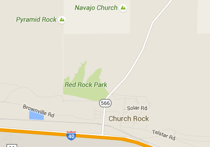

Hike New Mexico
w/ Tom & Ken
Pyramid Rock Trail
| Difficulty | Round-trip | Type | Elev. Chg. | Exposure | Wow Factor | Facilities | Seasons | Flickr | Get There |
|---|---|---|---|---|---|---|---|---|---|
| Medium | 6 miles | Out-and-back | 600 ft | Full sun | Great vistas | State Park | Not Winter | Album | Directions |



- Apr 16, 2014: Hiking near the trailhead
- Apr 16, 2014: Pyramid as seen from the trail
- Apr 16, 2014: Getting close to the final ascent
- Apr 16, 2014: Expansive views from the top
- Apr 16, 2014: From a different angle
- Apr 16, 2014: Church Rock - another hike, another day!
- Apr 17, 2014: A great taste of Gallup!
- https://www.flickr.com/photos/139088815@N08/26798608673/in/album-72157668378600840
- https://www.flickr.com/photos/139088815@N08/27405389855/in/album-72157668378600840
- https://www.flickr.com/photos/139088815@N08/27334201051/in/album-72157668378600840
- https://www.flickr.com/photos/139088815@N08/26798569273/in/album-72157668378600840
- https://www.flickr.com/photos/139088815@N08/26797397384/in/album-72157668378600840
- https://www.flickr.com/photos/139088815@N08/27405409465/in/album-72157668378600840
- https://www.flickr.com/photos/139088815@N08/27307268792/in/album-72157668378600840
Red Rock State Park near Gallup, NM has more than one good hiking trail. Pyramid Rock is named for its obvious shape, and offers great 360-degree views of the area. The trail has no shade, and the final part of the trail is somewhat steep as it ascends the rock. From the Pyramid Rock trail, Church Rock can also be seen, which constitutes another hike. It is not a long or arduous hike, and the scenery is well worth the effort.